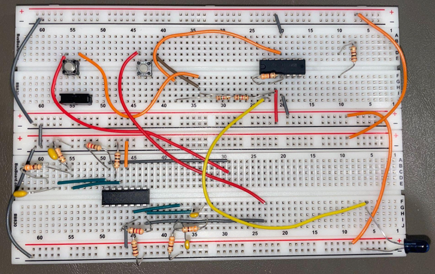
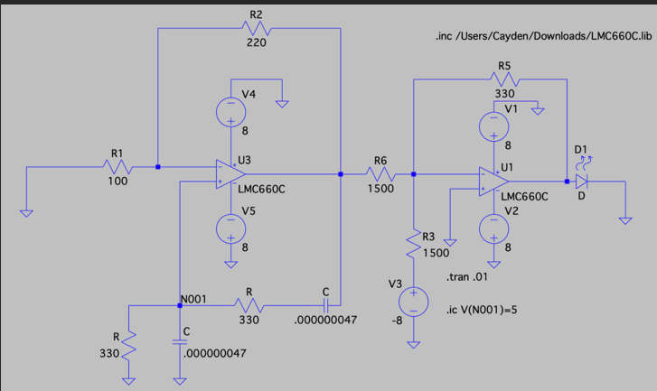
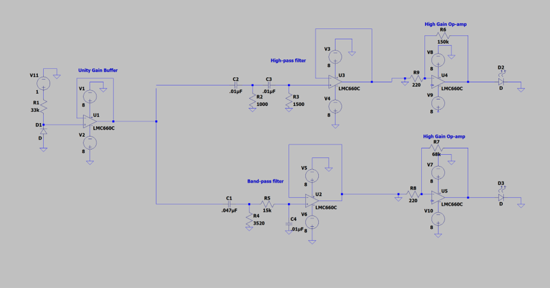

Optical Signaling Device (EE 230)
Infrared transmitter/receiver pair using oscillators, filters, and amplification to detect two signaling tones.

Hardware photo

Transmitter circuit

Receiver circuit
Overview
- Designed a transmitter with two selectable tones (1 kHz and 10 kHz).
- Designed a receiver using filtering + buffering to differentiate tones and drive indicator LEDs.
- Validated in lab; prototype reached 30+ inches range.
System Requirements
- Transmitter outputs two distinct tones to an IR LED; receiver uses filtering + amplification to light one of two indicator LEDs.
- Target distance: up to ~2 feet between transmitter and receiver.
Design Approach
- Built two Wien-bridge oscillators (1 kHz and 10 kHz) and used a summing amplifier with DC offset to drive the IR LED.
- Receiver used filtering stages (high-pass + band-pass) and buffering/amplification to separate tones and reduce false triggers.
Outcome
-
Achieved a working prototype with a measured range of 30+ inches (and identified ways to extend range with higher LED drive current).
Design Documents
Files: